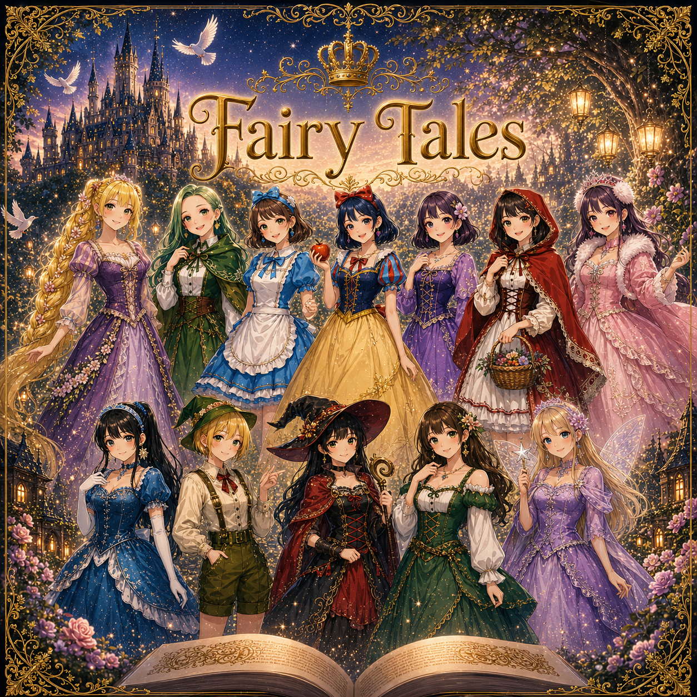
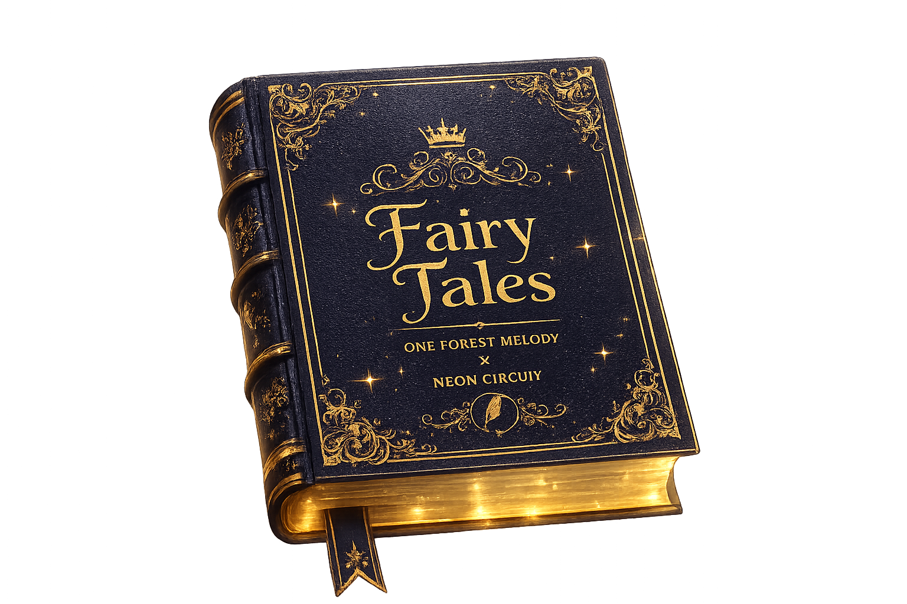

NEON CIRCUIT
STORY 09
Tsukihime
かぐや姫
ENTEROnce upon a time...
TAP TO OPENONE FOREST MELODY × NEON CIRCUIT
おとぎ話は、何度でも始まる。

STORY 09
かぐや姫
ENTER

STORY 03
白雪姫
ENTERONE FOREST MELODY と NEON CIRCUIT が紡ぐ、 16篇のおとぎ話。 誰もが知る物語を、 それぞれの世界観で描いた コンセプトアルバム。
CD・歌詞カード・アクリルグッズなど、 Fairy Talesの世界を彩る オリジナルアイテム。
すべてのおとぎ話は、 ここから始まり、 そしてまた誰かの物語になる。